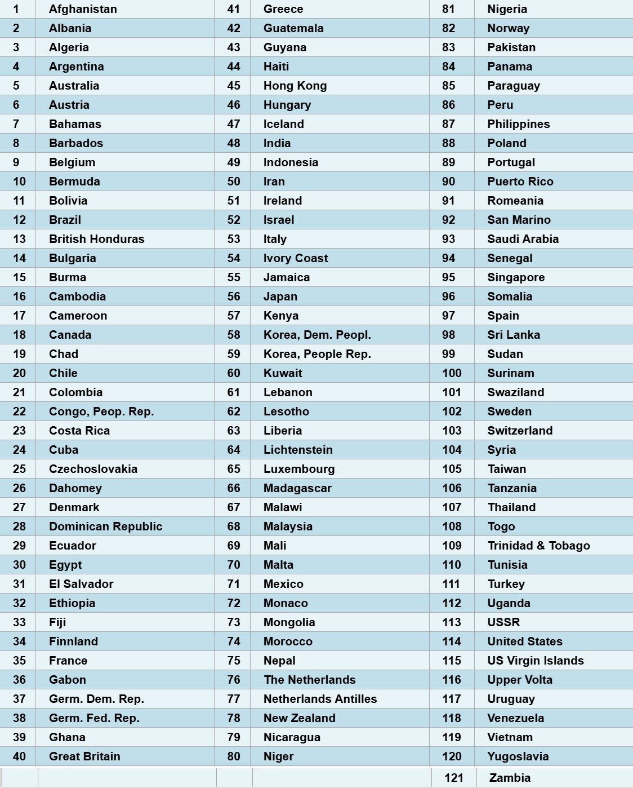
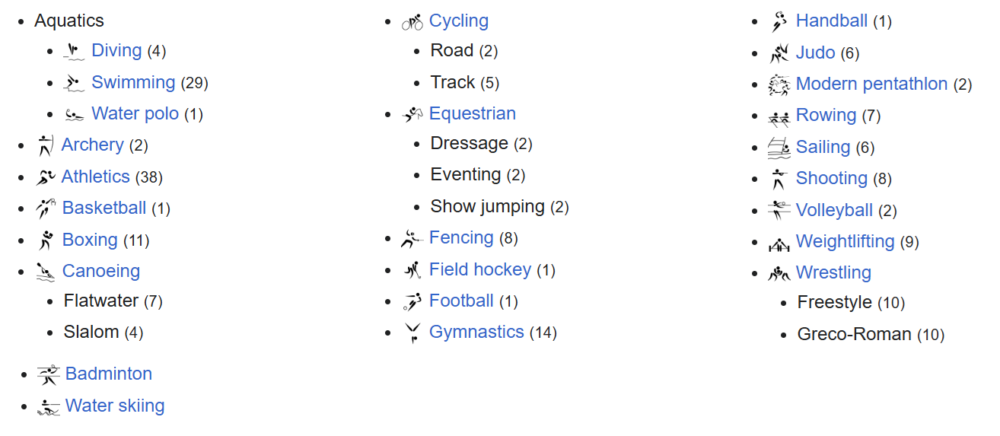
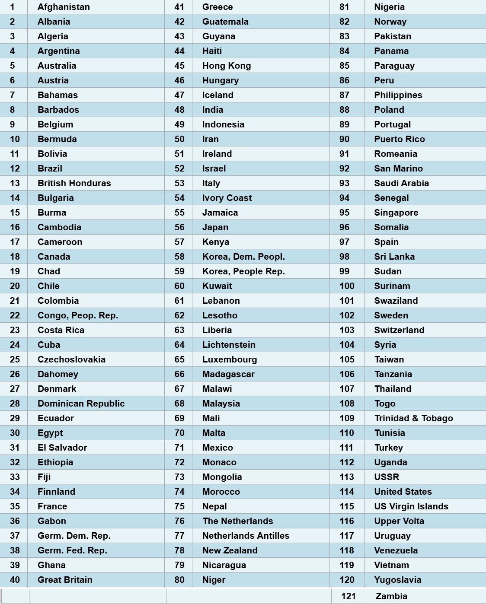
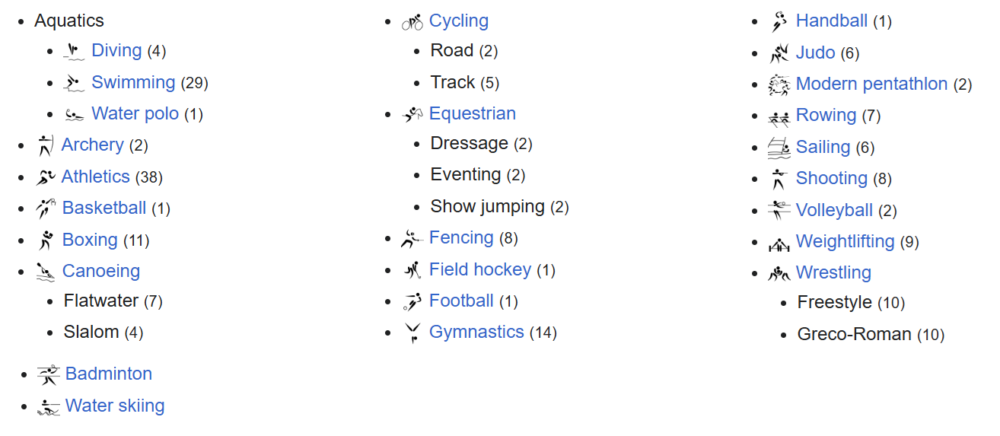
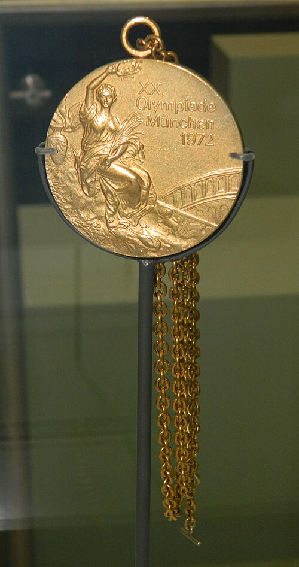

Participants and Events
121 teams took part in the 1972 Munich Olympic games competing across 195 events. [1]
The full list of countries which competed in the games are:
and the full list of games played is:
 [2]
121 teams took part in the 1972 Munich Olympic games competing across 195 events. [1]
The full list of countries which competed in the games are:
and the full list of games played is:
 [2]
While making it to the Olympics, Ireland did not win any medals over the two week long event. only advancing in Athletics, (3 athletes in the Men's marathon and one in Women's pentathlon) Cycling (4 athletes in the individual road race) and rowing. (1 athlete in Men's single sculls)
Although, unsuccessful in obtaining a medal. A national record was set by Mary Tracey in the Women's 1,500 metres athletics with a time of 4:16.43. A record which only stood for 4 years, until the following Olympics where she broke it again!
The record stood for another 16 years until 1996 where it was finally beaten by Sonia O'Sullivan with a time of 4:06.24. Just over 2 seconds faster than the previous time. [3] Sadly, the other 58 competitors failed to break any national records or achieve a medal However they are still held in high regards as representing the nation well and as highly capable athletes.
in total, Ireland competed in just 12 sports with 59 athletes, the second highest amount of athletes since the first games following the end of world war two in 1948 which took place in London.
of the events previously listed at the Munich games, Ireland only participated in:

On the evening of September 5th, 1972. Eleven israeli athletes were taken hostage by members of the Palestinian organisation "Black September". [ 4]
The group of terrorists broke into the Olympic village "just before dawn" [5]. During the break in, two of the athletes present were killed by gunshot wounds in a struggle. The other nine, along with their coaches and some officials, were held captive in their dorm for almost 18 hours in a stand-off with German police and negotiators. After this long negotiation period, the terrorists were left with just the nine israeli athletes as hostages and had secured transport for themselves and the hostages. With transport secured and a destination set for an unknown country in the middle East, the German police decided to make a move before their plane could leave.
In the late evening of September 5th, the hostages and "black September" members were moved by helicopter to the military airport of Fürstenfeldbruck, where they had organised to be met by a plane bound East. upon arriving, the police ambushed them in an attempt to rescue all hostages present. This however, tragedically failed. During the ambush, all hostages were killed by the terrorist aboard the plane. Some killed by an explosion while the rest were promptly shot [6].
In the resulting chaos, all but three of the terrorists received the same fate as their former hostages being killed in a firefight with police. The remaining members were arrested and stood pending trial in Germany. This however, was cut short in October of the same year
On October 29th 1972, Lufthansa flight 615 was hijacked by the same terror organisation in an attempt to "liberate" the remaining prisoners for the Munich Massacre.
The trio were released following demands of the terrorists aboard flight 615. The handover occurred at Zagreb airport, Croatia. Holding up their end of the deal, the plane landed at Tripoli, Libya, where all the hostages were handed over successfully [7].
despite the interruptions to the games, they continued after only a few hours of delays. after which, the games finished and medals were awarded!
The top ten medal winning nations (in order of gold medals):
[8]
These nations won a combined total of 440 medals. (161 gold, 138 silver and 141 bronze) The USSR took home the most gold medals by a large margin (17 medals) and for the time, was their largest received number at a single Olympic event. This record was only beaten 8 years later when the games were hosted in Moscow 1980 (80 gold medals) and again in 1988 in Seoul, South Korea (55 gold medals). These were the only two times the Soviet Union beat the record set at Munich in 1972. [9]
1972 Olympic gold medal (awarded to Mary Peters)



| Other Olympic Games | Contact us | <References Sited |
|---|---|---|
| The 1992 Games | ||
| The 1904 Games |